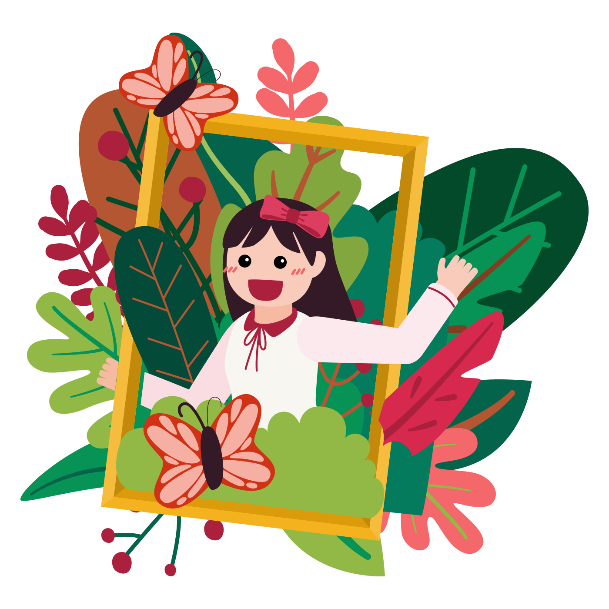

哈囉！我是Mia!
我是一位對藝術設計充滿熱忱，並具備多樣的創意技術背景，專注於 UX/UI 及品牌設計的設計師，致力於打造以使用者為中心且符合商業策略的設計，以提升企業客戶的參與度與績效。
我擁有豐富的領導經驗、跨領域合作能力以及展覽策劃經驗，並曾參與多個獲獎專案。我重視文化交流與持續學習，緊跟設計趨勢和科技進步，致力於在快速變化的 AI 環境中提供具影響力的解決方案。
瞭解更多

關於我的一些事情
我畢業於維吉尼雅聯邦大學(Virginia Commonwealth University)，主修工藝與材料研究，副修藝術史。因為疫情影響，我在大四期間選修「網頁設計」和「品牌設計」課程，進而對「網頁設計」深感興趣。我也成功在美國申請到「平面設計」的實習。之後，參加並成功拿到了台北商業大學溫教授所開放的UX共學課程以及Google UX證照，並持續進修網頁全端課程，以進一步拓展自己的技能。
| 簡介 | 品牌UXUI設計師 |
| 學歷 | 美國維吉尼亞聯邦大學 藝術系學士 主修：工藝與材料研究 副修：藝術史 |
| 經歷 |
|
| 語言 |
|
| 專長 |
品牌設計、UXUI設計、網頁設計、Flash 動畫及小遊戲、攝影、修圖、平面設計、影片剪輯、GIF 動畫、陶藝、玻璃工藝、木工、金工 |
| 開發經驗 | 學校課程作品、圍棋網、日本旅遊網站 |